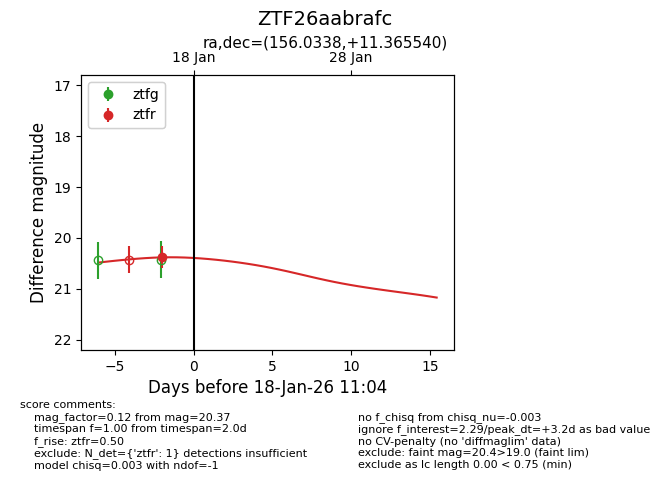
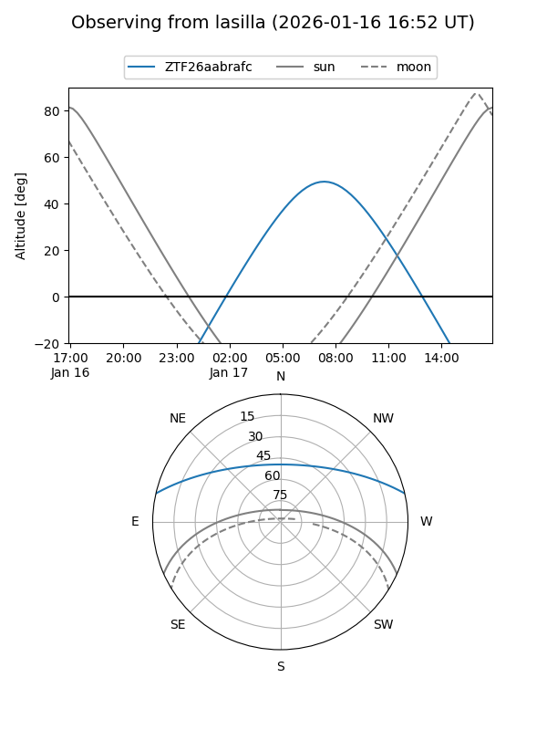
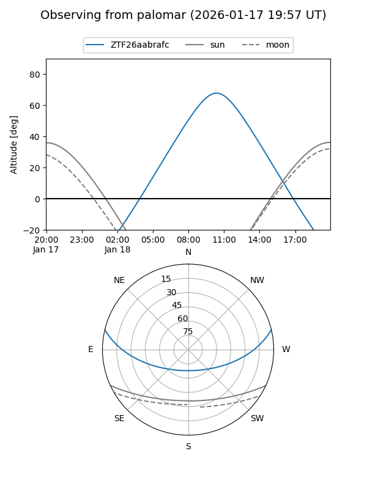

ZTF26aabrafc
Target ZTF26aabrafc at 2026-01-18 11:05
Aliases and brokers:
FINK: link
Lasair: link
ALeRCE: link
alt names
ZTF26aabrafc (ztf,fink_ztf)
Coordinates:
equatorial (ra, dec) = 156.0338,+11.36554
equatorial (HMS+DMS) = 10:24:08.11,+11:21:55.95
galactic (l, b) = (230.1810,+52.02617)
Flags:
Photometry:
last ztfr=20.37
1 ztfr detections
Lightcurve

Visibility


Additional plots